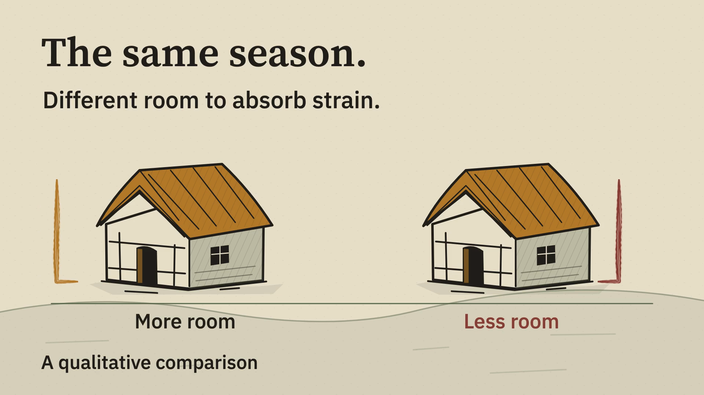
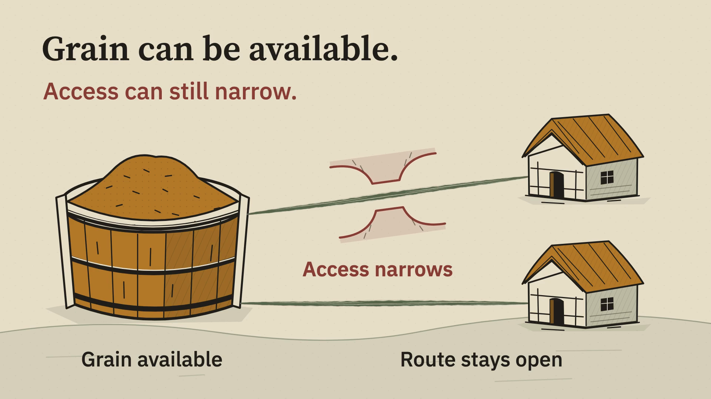
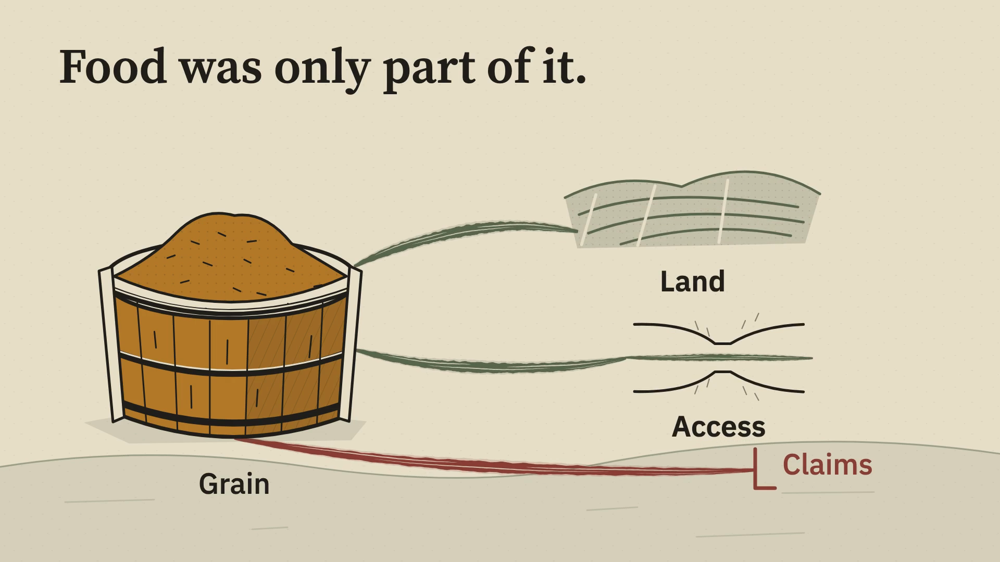
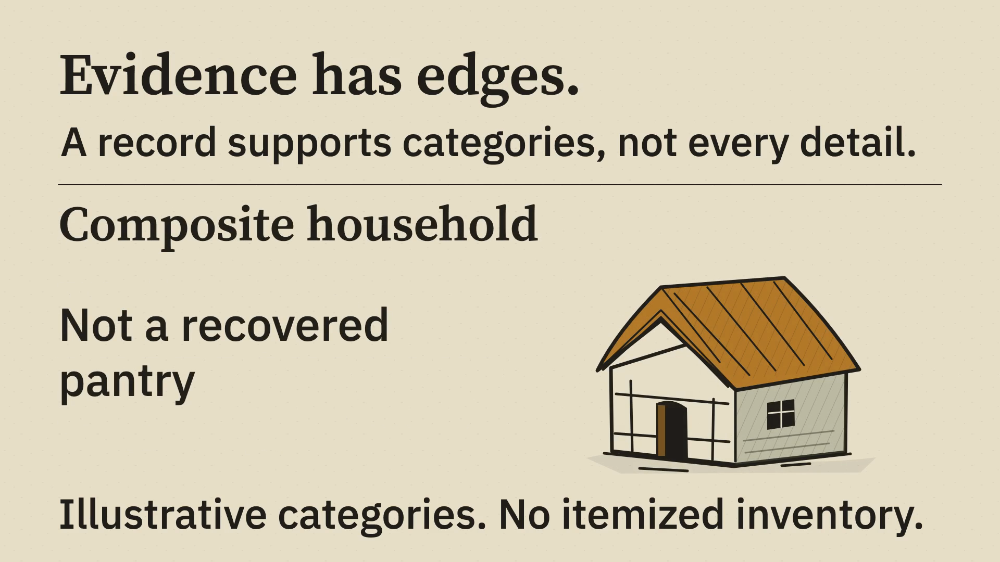
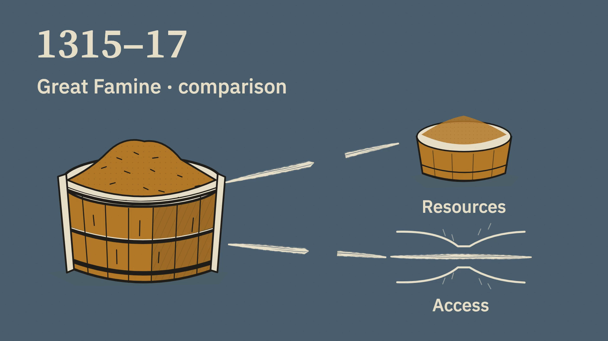
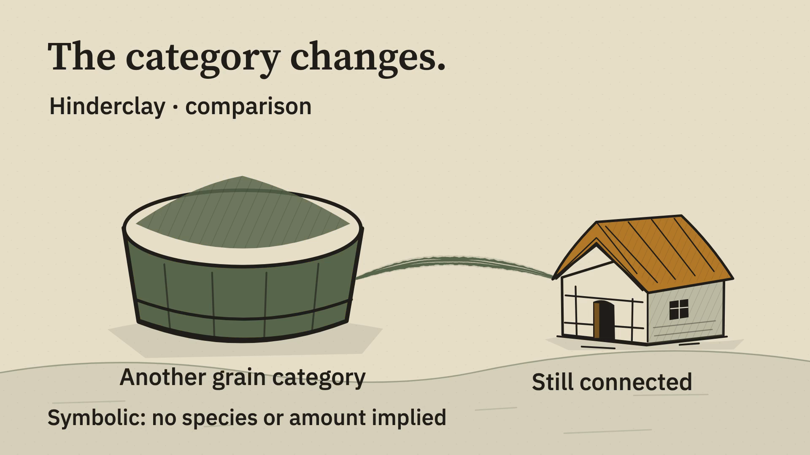
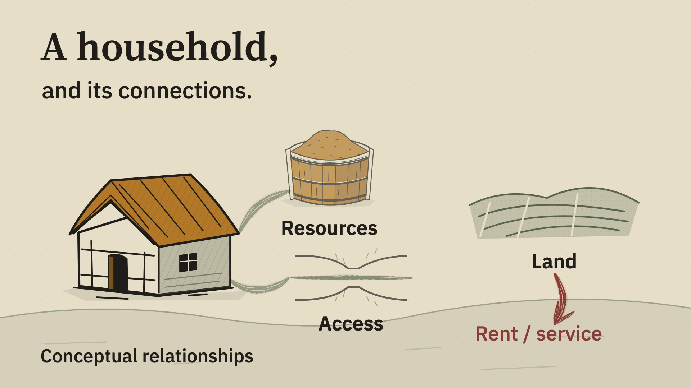
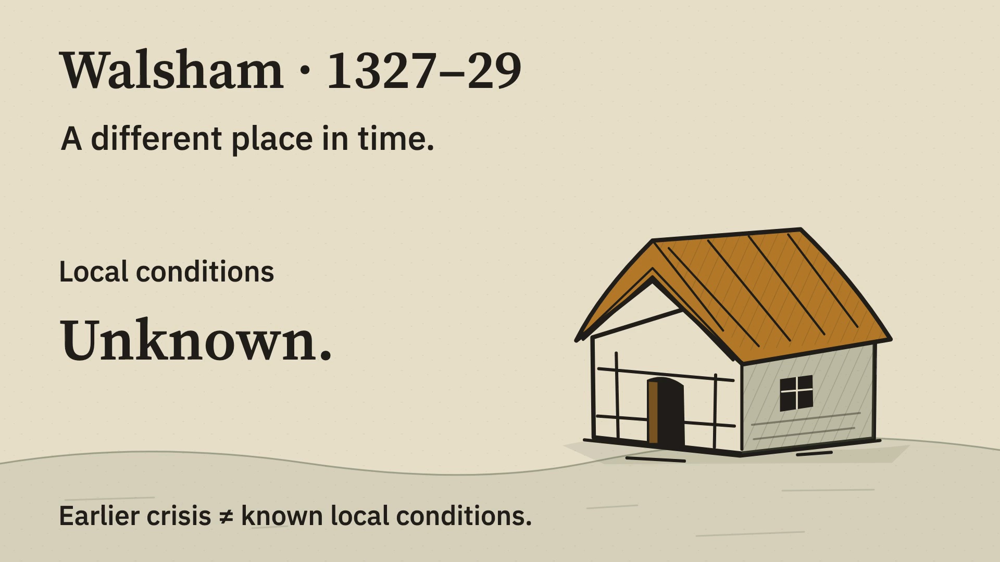

Still Shift / History Offstage
History, in motion.
Seven illustrated explanations. One shared drawing language, clear typography and motion that gives each relationship a purpose.
1080p · 24 fps · eight seconds each · silent motion studies
Watch the seven motions







